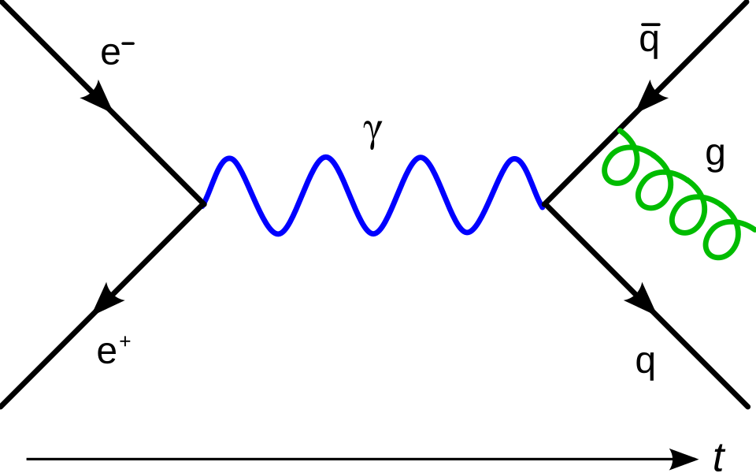
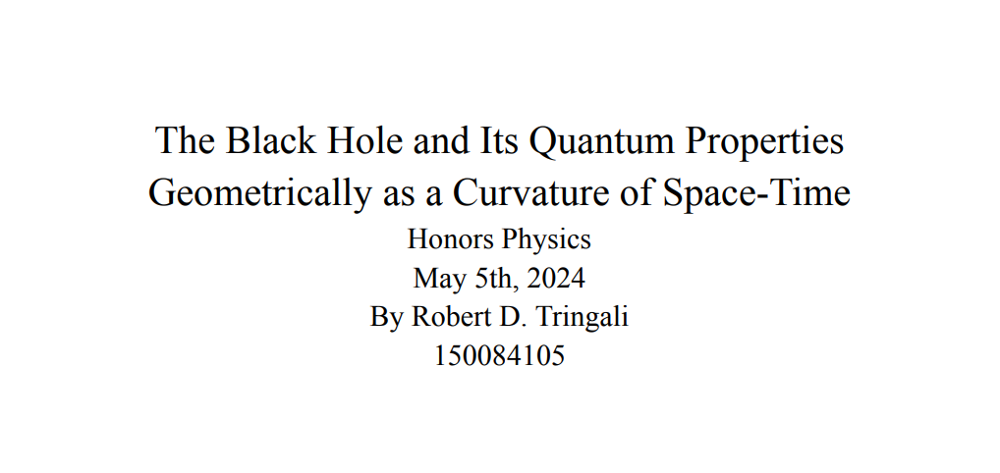
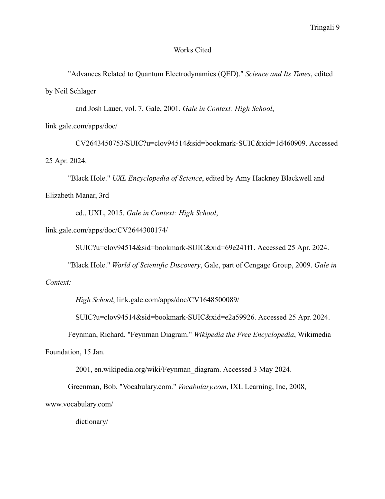

Black Hole Research Paper

Black Hole Research PaperProject Description:
Black holes have very interesting properties, and this research paper highlights some of its properties over time-space. Although it was made roughly two years ago, this paper should still accurately convey scientific information.
Concepts Learned:
- Image Integration: I utilized images to further convey knowledge to the reader about the topic of black holes.
- Creating Abstracts: This research paper required an abstract, which I wrote at the very end, so that I could accurately write a summary based on the knowledge given.
- Work Cited Page: Due to the use of many sources, I had to delve further into MLA formatting so that the layout and placement was all correct.
Challenges & Solutions:
- The Challenge: This topic needed many sources, all very credible.
- The Solution: To find the sources needed, I used online databases to look up various writers and their collections.
- The Challenge: Images were important to consider in hopes of aiding more visual learners to give a greater understanding of the overall topic.
- The Solution:Utilizing online resources, I could find and incorporate relevant visual interpretations of the content given.
- The Challenge: Using scientific abbreviations got really confusing, and at times, overwhelming.
- The Solutiion: I decided to use the expanded names while writing, to help with my comprehension, and afterwards replaced them with shortened names to make the final paper more concise.
Habits of Mind in Action:
- Investigate:Although I had some knowledge prior to the paper, I still needed to acquire much more information to create a more true essay.
- Persist: There were times when I needed to take a break from the research, planning, and writing, as it got overwhelming, but I still managed to come back to the paper, continuing to write.
